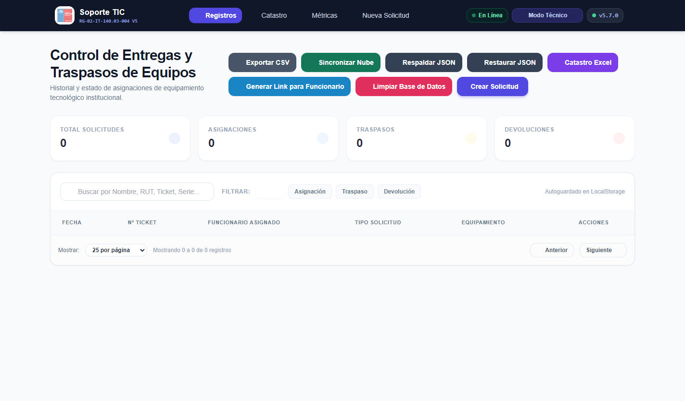
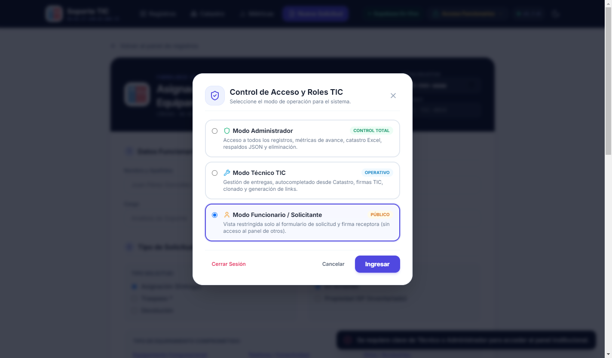
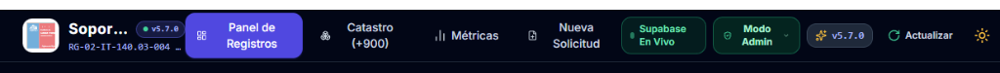
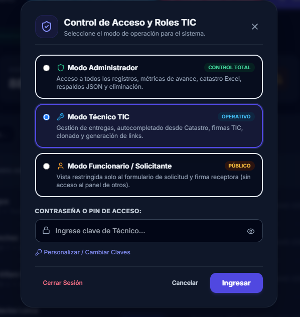
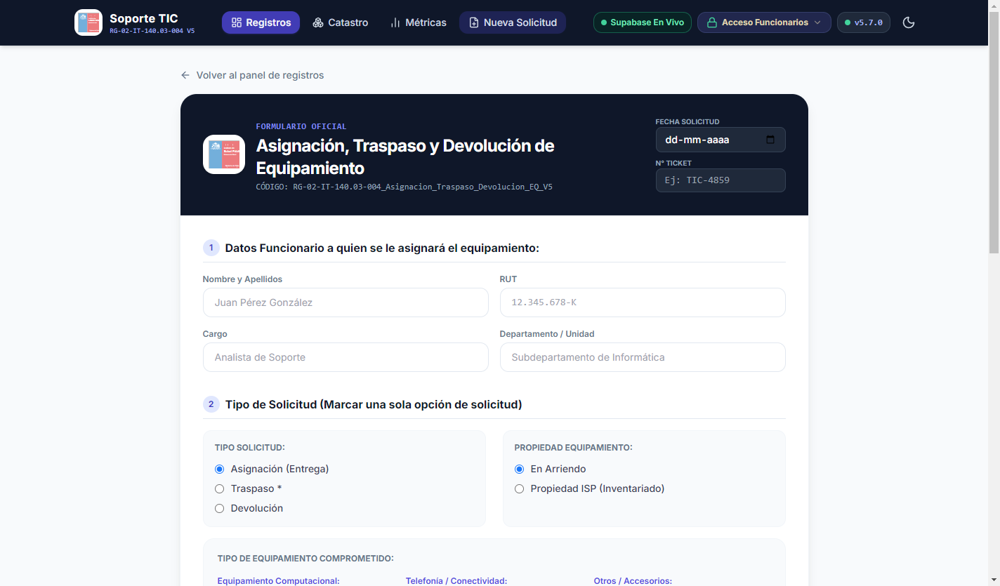
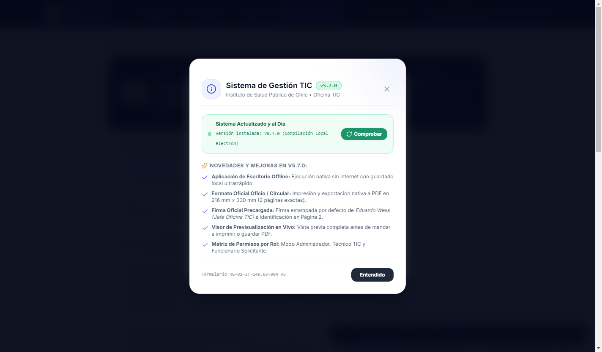
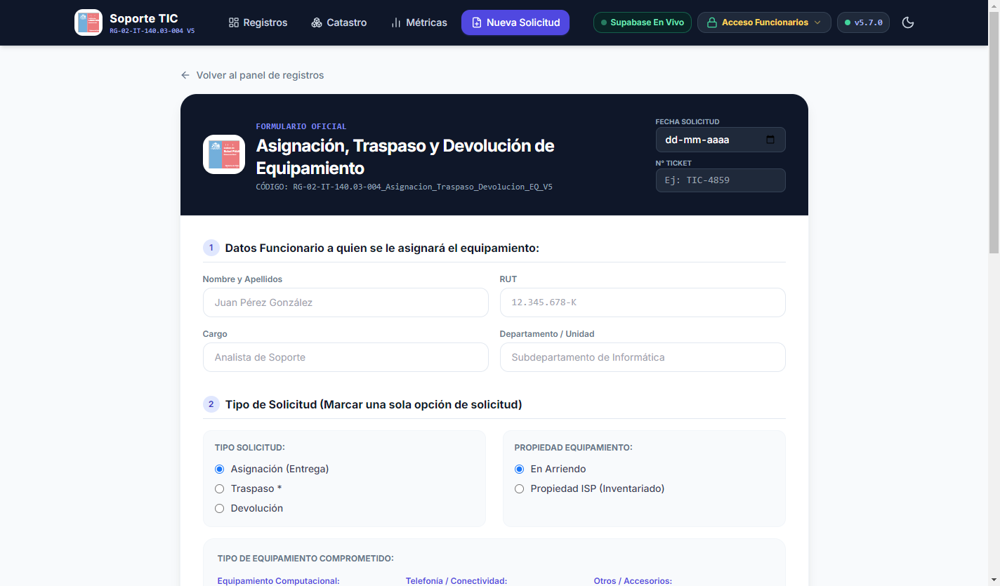
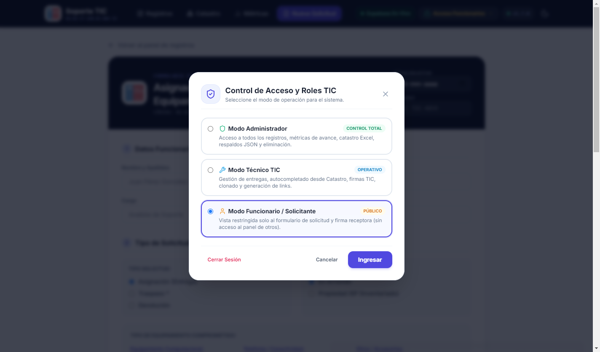

Manual Oficial de Instrucción Técnica
SISTEMA DE GESTIÓN DE EQUIPAMIENTO TIC
Guía de Usuario, Operación y Protocolos de Entrega, Traspaso y Devolución de Activos Tecnológicos
Formulario Oficial
RG-02-IT-140.03-004 V5
Versión del Software
v5.7.0 (Multiplataforma)
Modalidad Operativa
Windows (.exe) • Web PWA • Offline
Jefatura Responsable
Eduardo Wess (Jefe Oficina TIC)
Índice de Contenidos
- 1. Introducción y Propósito del SistemaPág. 3
- 2. Métodos de Acceso e Instalación (Windows, Web, Offline)Pág. 4
- 3. Estructura de la Interfaz y Barra de NavegaciónPág. 5
- 4. Matriz de Roles y Permisos (Administrador, Técnico, Funcionario)Pág. 6
- 5. Paso a Paso: Creación de un Acta de EquipamientoPág. 7
- 6. Gestión y Estampado de Firmas OficialesPág. 9
- 7. Previsualización Oficial y Flujo de Impresión (Tamaño Oficio)Pág. 10
- 8. Consulta de Catastro (+900 Equipos) y MétricasPág. 11
- 9. Respaldos (Backup JSON) y Sincronización en la NubePág. 12
- 10. Preguntas Frecuentes y Soporte TécnicoPág. 13
Marco Normativo: En cumplimiento del procedimiento IT Pérdida de Equipamiento y normativas del ISP Chile, todo retiro, traspaso o devolución de computadores, monitores, periféricos o telefonía debe quedar respaldado mediante el formulario oficial RG-02-IT-140.03-004 V5 con las firmas correspondientes.
Ficha de Control de Versiones
| Versión |
Fecha |
Unidad |
Principales Cambios |
| v5.7.0 |
Septiembre 2026 |
Oficina TIC - ISP |
Independización offline completa (Electron), soporte tamaño Oficio Chile (216x330mm), visor en vivo 2 páginas, firma oficial Eduardo Wess, matriz de 3 roles y backups JSON. |
1. Introducción y Propósito del Sistema
El Sistema de Gestión de Equipamiento TIC del Instituto de Salud Pública de Chile ha sido diseñado para modernizar, agilizar y asegurar la trazabilidad de los activos tecnológicos entregados en custodia a los funcionarios de la institución.
Objetivos Principales
- Digitalización Guiada: Reemplazar el llenado manual por un formulario estructurado con validación matemática de RUT chileno (algoritmo Módulo 11) y autocompletado en tiempo real de inventario.
- Fidelidad Documental 1:1: Generar automáticamente actas impresas que respetan rigurosamente el formato físico oficial RG-02-IT-140.03-004 V5 en papel tamaño Oficio o Circular (216 mm × 330 mm) estructurado en dos páginas exactas.
- Operatividad 100% Offline: Permitir la operación ininterrumpida de los técnicos de terreno en caso de caídas de red o faenas sin conexión a internet mediante tecnología local (Electron & LocalStorage).
- Sincronización Dual: Capacidad de sincronizar automáticamente con la base de datos central en la nube (Supabase) cuando el enlace de red esté disponible.

Figura 1.1: Panel Principal de Registros y Control de Solicitudes Guardadas.
Tipos de Operaciones Contempladas
| Operación |
Descripción |
Firmas Requeridas |
| Asignación |
Entrega de equipamiento tecnológico nuevo o reacondicionado a un funcionario para sus labores habituales. |
Firma Jefe TIC (Pág. 1) + Firma Funcionario Receptor (Pág. 2). |
| Traspaso |
Transferencia formal de custodia de un equipo de un funcionario emisor a uno receptor (cambio de unidad o reemplazo). |
Firma Jefe TIC (Pág. 1) + Firma Funcionario Emisor (Pág. 2) + Firma Funcionario Receptor (Pág. 2). |
| Devolución |
Recepción en la Oficina TIC de equipos dados de baja, reasignación o desvinculación de un funcionario. |
Firma Jefe TIC (Pág. 1) + Firma Funcionario que entrega (Pág. 2). |
2. Métodos de Acceso e Instalación
El sistema se distribuye en múltiples modalidades para adaptarse a las necesidades operativas de la Oficina TIC:
2.1. Aplicación de Escritorio para Windows (.exe)
Es la modalidad principal recomendada para los técnicos del ISP. Se encuentra en la carpeta del proyecto dist/ y ofrece dos modalidades:
- Instalador Guiado (Setup): Archivo
Formulario TIC - ISP Setup 5.7.0.exe. Instala el programa en el sistema, añade acceso directo en el Escritorio y en el Menú Inicio de Windows.
- Versión Portable (Sin Instalación): Archivo
Formulario_TIC_ISP_Portable_v5.7.0.exe. Se puede ejecutar directamente desde una memoria USB o disco local sin requerir privilegios de administrador ni conexión a internet.
Ventaja Clave Offline: Las versiones de escritorio para Windows cuentan con todas las librerías CSS, tipografías e iconos empaquetados localmente, garantizando carga instantánea incluso sin conexión de red.
2.2. Acceso Web Oficial & PWA
Para acceso remoto o consultas desde cualquier equipo conectado a la red institucional:
- URL Oficial: https://formulario-tic.vercel.app/
- Instalación PWA (Progressive Web App): Desde Google Chrome o Microsoft Edge, pulse en el icono de instalación en la barra de direcciones para anclarla como aplicación nativa en Windows, Mac o dispositivos móviles.
2.3. Acceso en Teléfonos y Tablets (Android)
- Instalador Nativo (APK): Archivo
Formulario_TIC_ISP_v5.7.0.apk compilado para dispositivos Android.
- Instalación PWA en Chrome Móvil: Ingrese a la URL, abra el menú de opciones (⋮) y seleccione "Instalar aplicación" o "Agregar a la pantalla principal".

Figura 2.1: Ventana de Información del Sistema, Novedades y Comprobación de Versión.
3. Estructura de la Interfaz y Barra de Navegación
La aplicación cuenta con una barra de navegación superior (Navbar) moderna, limpia y responsive que se adapta automáticamente a la resolución de la pantalla:

Figura 3.1: Componentes principales de la Barra de Navegación Superior.
Elementos de la Barra Superior
| Componente |
Ubicación |
Función |
| Logo e Identidad ISP |
Extremo Izquierdo |
Muestra el imagotipo oficial del Instituto de Salud Pública y el código normativo del formulario (RG-02-IT-140.03-004 V5). |
| Pestaña "Registros" |
Centro (Menú) |
Accede a la tabla histórica de solicitudes guardadas, con filtros rápidos y opciones de edición, impresión y exportación. |
| Pestaña "Catastro" |
Centro (Menú) |
Buscador en vivo de los más de 900 números de serie de equipos catastrados en el ISP. |
| Pestaña "Métricas" |
Centro (Menú) |
Estadísticas consolidadas de asignaciones, devoluciones y stock de equipamiento. |
| Pestaña "Nueva Solicitud" |
Centro (Menú) |
Limpia los campos y abre el formulario en blanco para generar una nueva acta de entrega. |
| Indicador de Conexión |
Extremo Derecho |
Muestra si el sistema está operando "En Línea" (sincronizado con Supabase) o "Modo Local" (offline). |
| Selector de Rol |
Extremo Derecho |
Permite autenticarse como Administrador, Técnico TIC o Funcionario. |
| Badge de Versión (v5.7.0) |
Extremo Derecho |
Muestra la versión instalada. Al hacer clic, despliega el panel de novedades y el botón de comprobación de actualizaciones. |
| Interruptor de Tema |
Extremo Derecho |
Alterna entre modo oscuro (Dark Mode) y modo claro de alto contraste. |
4. Matriz de Roles y Permisos (Seguridad)
Para salvaguardar la integridad de los datos institucionales, la aplicación incorpora una matriz estricta de 3 roles de usuario, claramente diferenciados:

Figura 4.1: Matriz de Roles y Niveles de Acceso al Sistema.
4.1. Detalle de Permisos por Rol
| Acción / Función |
Modo Administrador |
Modo Técnico TIC |
Modo Funcionario |
| Llenar y firmar nueva solicitud |
✔ Sí |
✔ Sí |
✔ Sí (Solo Pág. Solicitud) |
| Acceso a Catastro (+900 equipos) |
✔ Sí (Total) |
✔ Sí (Autocompletado) |
✖ Denegado |
| Panel de Métricas y Estadísticas |
✔ Sí |
✔ Sí |
✖ Denegado |
| Previsualización e Impresión Oficio |
✔ Sí |
✔ Sí |
✔ Sí (Su propia acta) |
| Editar registros existentes |
✔ Sí |
✔ Sí |
✖ Denegado |
| Eliminar registros individuales |
✔ Sí (Exclusivo) |
✖ Protegido |
✖ Denegado |
| Exportar Respaldos JSON |
✔ Sí |
✖ Protegido |
✖ Denegado |
| Restaurar Respaldos / Vaciar BD |
✔ Sí (Exclusivo) |
✖ Protegido |
✖ Denegado |
4.2. Cómo Cambiar de Rol
- Haga clic en el botón de rol en la barra superior (ej. "Modo Técnico").
- Seleccione el rol deseado en la ventana emergente.
- Si selecciona Modo Administrador, ingrese la clave o PIN maestro de seguridad autorizado por la Oficina TIC.
- El sistema actualizará la interfaz al instante ocultando o mostrando los controles administrativos.
5. Paso a Paso: Creación de un Acta de Equipamiento
A continuación se detalla el procedimiento oficial para registrar una nueva entrega de activos:

Figura 5.1: Formulario interactivo con autocompletado y validación de datos.
Paso 1: Datos de Cabecera y del Funcionario
- Fecha: Se completa automáticamente con la fecha actual del sistema (editable si es necesario).
- Ticket / Folio OT: Número de ticket del helpdesk institucional (opcional).
- RUT del Funcionario: Ingrese el RUT (con o sin puntos y guión). El sistema:
- Formatea automáticamente los puntos y guión (ej.
12.345.678-9).
- Valida el dígito verificador mediante el algoritmo matemático Módulo 11.
- Muestra un check verde de validación o una advertencia en rojo si el RUT no es matemáticamente válido.
- Nombre Completo, Cargo y Departamento: Datos formales del solicitante.
Paso 2: Tipo de Solicitud y Propiedad
- Tipo de Solicitud: Marque Asignación, Traspaso o Devolución.
- Propiedad del Equipamiento: Indique si el equipamiento es "En Arriendo" o "Propiedad ISP".
- Categorías de Equipamiento: Marque las casillas de los tipos de equipos a entregar (PC, Notebook, All In One, Monitor, Celular, Teléfono IP, SIMCARD, BAM u Otros).
Paso 3: Sección Exclusiva de Traspaso (Si Aplica)
Si seleccionó la opción Traspaso, el formulario desplegará automáticamente la Sección 3: Datos de Traspaso:
- Funcionario Emisor: Nombre y departamento del funcionario que transfiere el equipo.
- Funcionario Receptor: Nombre y departamento del funcionario que asume la custodia.
- Observación del Traspaso: Motivo del cambio de equipamiento.
Paso 4: Ingreso y Autocompletado de Equipos
La tabla de equipos permite ingresar uno o varios dispositivos en una misma acta:
Búsqueda Inteligente en Catastro (+900 series): Al comenzar a escribir en el campo N° de Serie, el sistema busca en tiempo real en la base de datos de catastro del ISP y le ofrece sugerencias. Al hacer clic en un equipo sugerido, el sistema autocompleta de inmediato el Tipo, Marca, Modelo y N° de Inventario.
| Columna |
Descripción y Reglas de Ingreso |
| Tipo |
Seleccione del listado: Notebook, PC Escritorio, Monitor, All in One, Celular, etc. |
| Marca |
Fabricante del hardware (ej. HP, Lenovo, Dell, Samsung). |
| Modelo |
Modelo técnico exacto (ej. ProBook 450 G8, ThinkCentre M70q). |
| N° Serie |
Identificador alfanumérico único de fábrica (Serial Number). |
| N° Inventario |
Código interno de inventario institucional asignado por el ISP. |
| Estado / Obs |
Condición física y operativa del equipo (ej. "Excelente", "Nuevo", "Con cargador original"). |
- Para añadir más dispositivos, pulse el botón "+ Añadir Fila de Equipo".
- Para eliminar un equipo no deseado, pulse el icono de papelera a la derecha de la fila.
Paso 5: Accesorios y Observaciones Generales
- Accesorios: Detalle los complementos entregados (ej. "Mochila HP, transformador 65W, mouse USB, candado de seguridad Kensington").
- Observaciones Generales: Cualquier condición contractual o técnica relevante para el acta.
6. Gestión y Estampado de Firmas Oficiales
El sistema cuenta con una arquitectura de firmas híbrida que cubre tanto la firma digital en pantalla como la firma física tradicional:
6.1. Firma del Profesional Oficina TIC (Página 1)
Representa la aprobación formal de la Oficina TIC para la salida del equipo:
- Firma Oficial de Eduardo Wess (Por Defecto): Viene seleccionada automáticamente la opción "Firma Oficial". Estampa el trazo oficial exacto de la jefatura de TIC de forma nítida sobre la línea de firma en la Página 1 del acta.
- Dibujar en Pantalla (Digital): Habilita un canvas táctil para que el técnico o profesional firme con el mouse, lápiz óptico o dedo.
- Firma Manual: Oculta cualquier imagen digital y deja la línea limpia para estampar firma física con bolígrafo y timbre en papel.
Nombre y Firma Profesional Oficina TIC
Eduardo Wess • Jefe Oficina TIC
6.2. Firmas de Emisor y Receptor (Página 2)
Ubicadas en los recuadros oficiales de responsabilidad de la Página 2 del acta:
- Firma Funcionario Responsable Receptor: Corresponde al funcionario que recibe los equipos. Puede firmar digitalmente en el panel o dejarse en modo manual para que firme al recibir el documento impreso.
- Firma Funcionario Responsable Emisor: Aplica en solicitudes de tipo Traspaso para acreditar la entrega del funcionario anterior.
- Rotulación Automática: Bajo la línea de firma, el sistema imprime automáticamente en tipografía oficial el Nombre Completo y RUT del funcionario correspondiente, garantizando la individualización del firmante.
Consideraciones Legales Impresas: Todo recuadro de firma de la Página 2 incluye la cláusula obligatoria: "Al firmar y recibir éste(os) equipamiento(s) me hago responsable de su uso y cuidado. En caso de pérdida, se debe seguir lo indicado en IT Pérdida de Equipamiento".
7. Previsualización Oficial y Flujo de Impresión
Uno de los mayores avances del sistema es el Visor de Previsualización en Vivo de 2 Páginas, que permite verificar con total fidelidad el documento antes de imprimirlo o guardarlo:

Figura 7.1: Visor interactivo en vivo con formato oficial Oficio Chile.
7.1. Controles del Visor de Previsualización
- Filtro de Páginas: Botones para alternar entre "Todas las Páginas", "Página 1 (Acta y Equipos)" y "Página 2 (Firmas y Consideraciones)".
- Guardar PDF: Genera y descarga directamente el archivo PDF vectorial sin necesidad de abrir el diálogo de impresión de Windows.
- Imprimir Acta: Abre la ventana de impresión nativa con los estilos oficiales ya inyectados.
- Volver a Editar: Cierra el visor y regresa al formulario sin perder ningún dato ingresado.
7.2. Configuración de Papel Oficio / Circular Chile
El documento está diseñado con reglas CSS de alta precisión (@page { size: 216mm 330mm; }) para que cada página se ajuste con exactitud milimétrica:
- Página 1: Logotipo ISP, Ficha de Solicitud (Sec. 1), Tipos de Solicitud y Equipamiento (Sec. 2), Datos de Traspaso (Sec. 3), Tabla de Equipamiento con bordes oficiales (Sec. 4), Observaciones y Firma del Jefe TIC.
- Página 2: Cuadros independientes de responsabilidad de Firma Emisor y Firma Receptor con nombres impresos y advertencia legal final.
Cero Desbordes: La diagramación garantiza que el documento nunca se corte a mitad de tabla ni genere una tercera hoja en blanco accidental.
8. Consulta de Catastro (+900 Equipos) y Métricas
8.1. Buscador Central de Catastro
La pestaña Catastro (+900) permite auditar y verificar rápidamente el inventario general del Instituto de Salud Pública:

Figura 8.1: Módulo de Catastro Centralizado con buscador en vivo.
- Búsqueda Instantánea: Filtre por N° de Serie, Marca, Modelo, Tipo de Equipo o Nombre de Funcionario asignado.
- Filtro por Categorías: Botones rápidos para visualizar solo Notebooks, PCs, Monitores, etc.
- Acción "Crear Solicitud con este Equipo": Al hacer clic sobre un equipo del catastro, puede transferir sus datos directamente a un nuevo formulario de asignación sin tener que digitar nada.
8.2. Panel de Métricas de Gestión
La pestaña Métricas consolida en gráficos y resúmenes cuantitativos el movimiento tecnológico:
- Total de asignaciones vs traspasos vs devoluciones acumuladas.
- Distribución porcentual por categoría de equipamiento (Notebooks vs PCs vs Telefonía).
- Equipos en custodia institucional vs equipos entregados.

Figura 8.2: Tablero Estadístico y Métricas de Gestión TIC.
9. Respaldos (Backup JSON) y Sincronización en la Nube
9.1. Generación de Copias de Seguridad (Backup)
Para resguardar los registros sin depender de servidores externos, los usuarios administradores pueden exportar en cualquier momento una copia íntegra de la base de datos:
- Inicie sesión en Modo Administrador.
- En la parte superior de la tabla de registros, pulse el botón "Exportar Backup JSON".
- El sistema descargará un archivo con formato
backup_formulario_tic_ISP_YYYY-MM-DD.json que contiene todas las actas, firmas, tablas de equipos e historial.
- Almacene este archivo en una unidad segura de red o disco de respaldo.
9.2. Restauración de Copias de Seguridad
- En Modo Administrador, pulse en "Restaurar Backup".
- Seleccione el archivo
.json previamente exportado.
- El sistema validará la estructura de los datos y restaurará los registros inmediatamente.
Precaución de Seguridad: La función de restauración solo está autorizada para la Jefatura o Administradores TIC, ya que reemplaza los datos locales por los del archivo de respaldo.
9.3. Sincronización con Supabase (Nube)
- Cuando la aplicación detecta enlace a internet, el badge superior mostrará 🟢 En Línea / Supabase En Vivo.
- Cualquier formulario guardado o modificado se replica de forma segura en la base de datos PostgreSQL de Supabase en tiempo real.
- Si se pierde la conexión, el sistema continúa funcionando localmente sin interrupciones, guardando todo en el almacenamiento del equipo.
10. Preguntas Frecuentes y Soporte Técnico
¿Qué hago si el RUT aparece con borde rojo al ingresarlo?
El sistema valida el RUT con el algoritmo oficial de Registro Civil (Módulo 11). Si aparece en rojo, verifique que no haya invertido dígitos o que el dígito verificador sea correcto. El formulario no permitirá guardar hasta que el RUT sea matemáticamente válido.
¿Cómo imprimo el documento en papel Oficio sin que se corte?
Al abrir la ventana de previsualización y pulsar "Imprimir Acta", en el cuadro de diálogo de la impresora seleccione tamaño de papel Oficio / Folio / Legal (216 mm × 330 mm) y escala "Predeterminado" o "100%". Los márgenes están calculados para ajustarse automáticamente a dos hojas exactas.
¿Puedo utilizar el programa en un computador que no tiene internet?
Sí, absolutamente. Ejecute el archivo Formulario_TIC_ISP_Portable_v5.7.0.exe. La aplicación contiene todas las librerías, catastro de 900 equipos y plantillas dentro del ejecutable, por lo que funciona al 100% sin internet.
¿Por qué no puedo eliminar un registro desde mi usuario?
Por motivos de auditoría y control de inventario, el botón de eliminar registros y vaciar base de datos está restringido de forma exclusiva para el Modo Administrador. Si necesita dar de baja un registro erróneo, solicite la intervención del Administrador TIC.
Mesa de Ayuda y Soporte Técnico:
Oficina de Tecnologías de la Información y Comunicaciones (TIC)
Instituto de Salud Pública de Chile (ISP)
Jefatura: Eduardo Wess • Correo institucional de soporte TIC.